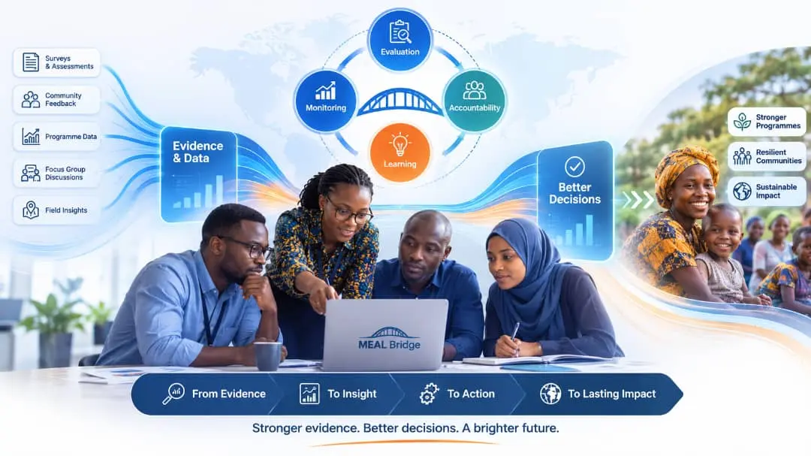

MEAL system design & strengthening
Build or upgrade the architecture connecting strategy, programmes, evidence, accountability, learning, and decision-making.
Typical outputs
MEAL frameworks
Indicator architecture
Roles, SOPs & governance
MEAL Bridge combines specialist consultancy with systems development so organizations can move beyond isolated tools and build capability that works end to end.
Some assignments begin with governance or methodology. Others begin with broken data flows or disconnected tools. We diagnose the system and bring in the right capabilities around the problem.
Our current capabilities draw on prior professional experience brought into MEAL Bridge by its leadership—across humanitarian and development MEAL, emergency response, accountability, evaluations, programme information, digital workflows, capacity development, and systems delivery.
We help organizations clarify what the MEAL system must achieve, establish the right architecture, and support teams as the design moves into daily practice.
Build or upgrade the architecture connecting strategy, programmes, evidence, accountability, learning, and decision-making.
Create monitoring and evaluation approaches that produce credible evidence for performance, adaptation, and strategic decisions.
Design safe, accessible, and responsive feedback systems that strengthen trust and organizational accountability.
Generate decision-ready evidence through rigorous, context-sensitive research and evaluation assignments.
Provide independent verification, field insight, and structured quality assurance for complex programmes and portfolios.
Turn evidence and operational experience into learning routines that improve future programme choices.
We translate operational requirements into usable data, feedback, automation, and learning systems—with governance and human judgment built in from the start.
Connect data collection, validation, storage, analysis, reporting, and ownership into a coherent operating model.
Give decision-makers focused, role-relevant views of performance, risk, accountability, and emerging trends.
Reduce manual friction by connecting repeated workflows, platforms, and information products.
Build structured digital pathways for feedback intake, referral, follow-up, analysis, and responsible closure.
Identify practical, governed uses of AI that improve analysis, documentation, quality checks, and knowledge access.
Make programme knowledge easier to find, interpret, share, and reuse across teams and programme cycles.
A dashboard cannot repair weak indicators. A framework cannot succeed without workflows and ownership. Training cannot compensate for a system that is difficult to use. Integrated assignments align all three.

The scope can be tightly focused or organization-wide. The right model depends on the complexity, urgency, internal capability, and level of implementation support required.
Targeted senior technical guidance for a defined challenge or strategic decision.
End-to-end diagnosis, design, implementation, handover, and capacity transfer.
Ongoing technical accompaniment, quality assurance, and continuous improvement.
Consultancy, systems development, and capacity building delivered as one coherent programme.
If the exact service is not obvious, describe the operational challenge. Defining the right problem is part of the work.
Yes. We assess what already works, identify the highest-value gaps, and prioritize targeted improvements rather than replacing useful structures.
Yes. This is often the strongest approach because the technical methodology, digital workflows, governance, and capacity transfer can be designed together.
Most advisory, design, coaching, and digital work can be delivered remotely. Selected assessments, workshops, and implementation activities can be delivered on-site where feasible.
Yes. We begin with the operational requirement and the existing technology landscape, then determine whether configuration, integration, or a new solution creates the best value.
Tell us what is not working, what decision is being constrained, or what organizational capability needs to improve.